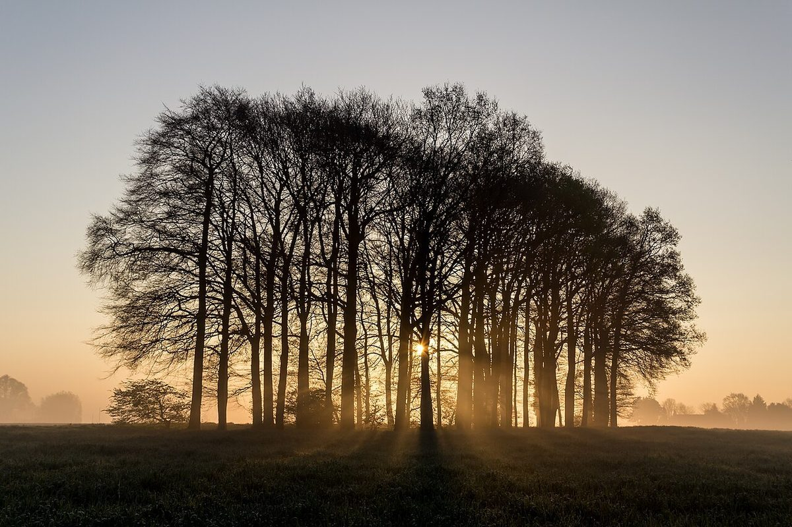

2 / 店のこと
解読できたこと、まだのこと
お店について確認できているのは、所在地とInstagramのアカウントだけです。
このページの「想像してみる」部分は制作側の想像です。お店の実際の様子・考え・メニューとは関係ありません。
解読できた
- 店名は「Little Base(リトルベース)」、業種はカフェ
- 所在地は熊本県八代市横手新町7-9(〒866-0875)
- 電話番号はなし。連絡はInstagramから
まだ伏せ字
- 営業時間・定休日
- メニュー・価格
- ご予約・駐車場

想像してみる
「小さな基地」から
由来は分かりません。制作側は、ふらりと立ち寄って荷物を下ろし、ひと息ついてまた出かけていく。そんな「ちょっとした拠点」のような場所かもしれない、と想像しました。たとえば窓辺の席で、あたたかい飲み物を手に過ごす時間を思い浮かべています(実際のお店の姿ではありません)。